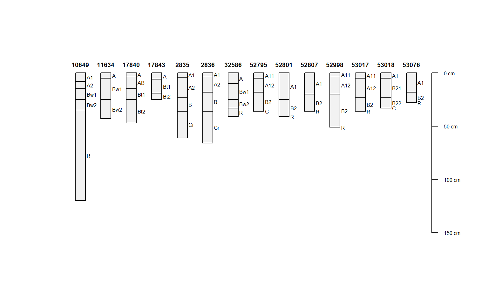
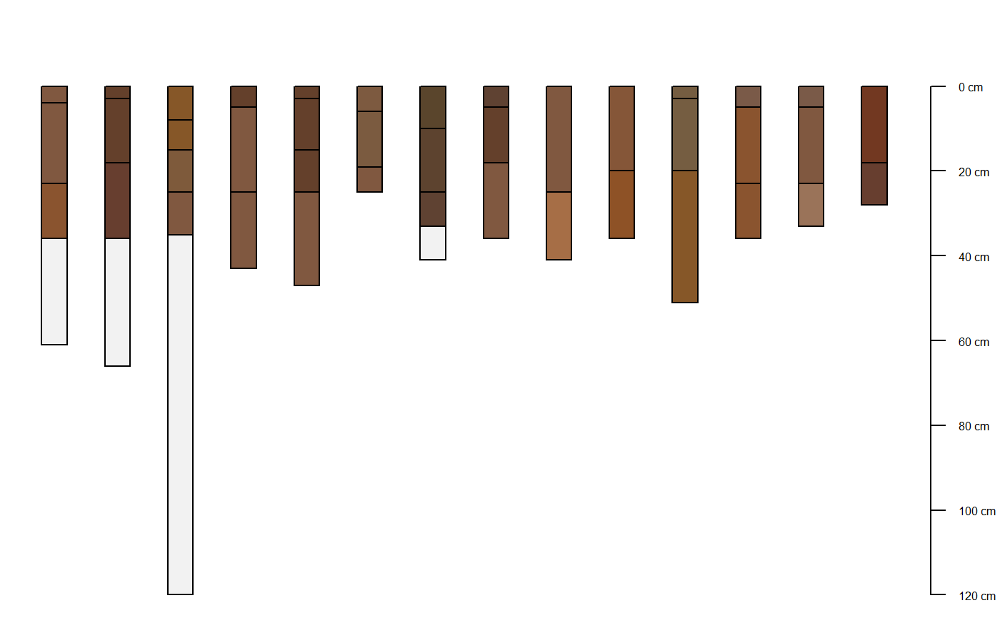
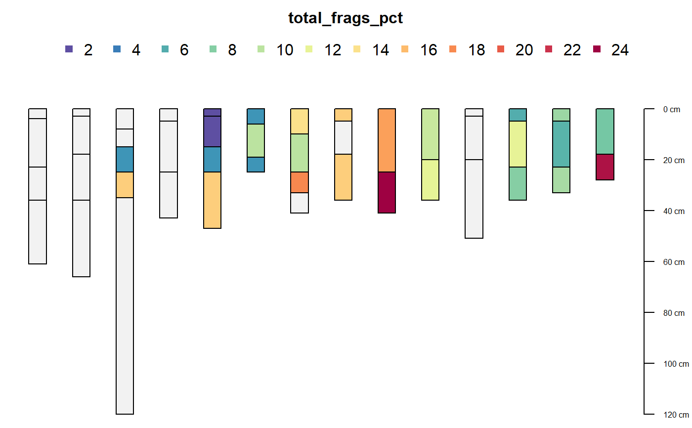

fetchKSSL.RdGet soil characterization and morphologic data via BBOX, MLRA, or series name query, from the KSSL database.
fetchKSSL(series=NULL, bbox=NULL, mlra=NULL, pedlabsampnum=NULL, pedon_id=NULL, pedon_key=NULL, returnMorphologicData=FALSE, simplifyColors=FALSE)
| series | a single soil series name, case insensitive |
|---|---|
| bbox | a bounding box in WGS84 geographic coordinates e.g. |
| mlra | a single MLRA ID, e.g. "18" or "22A" |
| pedlabsampnum | a single KSSL pedon lab sample number |
| pedon_id | a single user pedon ID |
| pedon_key | a single KSSL internal pedon ID |
| returnMorphologicData | optionally request basic morphologic data, see details section |
| simplifyColors | simplify colors (from morphologic data) and join with horizon data |
This is an experimental interface to a subset for the most commonly used data from a snapshot of KSSL (lab characterization) and NASIS (morphologic) data. The snapshots were last updated September 2018 (KSSL / NASIS).
Series-queries are case insensitive. Series name is based on the "correlated as" field (from KSSL snapshot) when present. The "sampled as" classification was promoted to "correlated as" if the "correlated as" classification was missing.
When returnMorphologicData is TRUE, the resulting object is a list. The standard output from fetchKSSL (SoilProfileCollection object) is stored in the named element "SPC". The additional elements are basic morphologic data: horizon colors, rock fragments, pores, and structure. There is a 1:many relationship between the horizon data in "SPC" and the additional dataframes in morph. See examples for ideas on how to "flatten" these tables.
Setting simplifyColors=TRUE will automatically flatten the soil color data and join to horizon level attributes.
Function arguments (series, mlra, etc.) are NOT vectorized: the first element of a vector will be used when supplied as a filter. See the fetchKSSL tutorial for ideas on how to iterate over a set of IDs.
)
a SoilProfileCollection object when returnMorphologicData is FALSE, otherwise a list.
SoilWeb maintains a snapshot of these KSSL and NASIS data. The SoilWeb snapshot was developed using methods described here: https://github.com/dylanbeaudette/process-kssl-snapshot. Please use the link below for the live data.
http://ncsslabdatamart.sc.egov.usda.gov/
# \donttest{ # search by series name s <- fetchKSSL(series='auburn')#>#> [1] 14# plot if(requireNamespace("sp")) { par(mar=c(0,0,0,0)) sp::plot(s, name='hzn_desgn', max.depth=150) }#>#> #>#> #> #>library(plyr)#> Warning: package 'plyr' was built under R version 3.5.3library(reshape2)#> Warning: package 'reshape2' was built under R version 3.5.3# get lab and morphologic data s <- fetchKSSL(series='auburn', returnMorphologicData = TRUE)#># extract SPC pedons <- s$SPC ## simplify color data manually s.colors <- simplifyColorData(s$morph$phcolor, id.var = 'labsampnum', wt='colorpct')#>#>#># merge color data into SPC h <- horizons(pedons) h <- join(h, s.colors, by='labsampnum', type='left', match='first') horizons(pedons) <- h # check par(mar=c(0,0,0,0)) plot(pedons, color='moist_soil_color', print.id=FALSE)#>## automatically simplify color data s <- fetchKSSL(series='auburn', returnMorphologicData = TRUE, simplifyColors=TRUE)#>#>#>#># simplify fragment data s.frags <- simplifyFragmentData(s$morph$phfrags, id.var='labsampnum') # merge fragment data into SPC h <- horizons(pedons) h <- join(h, s.frags, by='labsampnum', type='left', match='first') horizons(pedons) <- h # check par(mar=c(0,0,3,0)) plot(pedons, color='total_frags_pct', print.id=FALSE)#># }